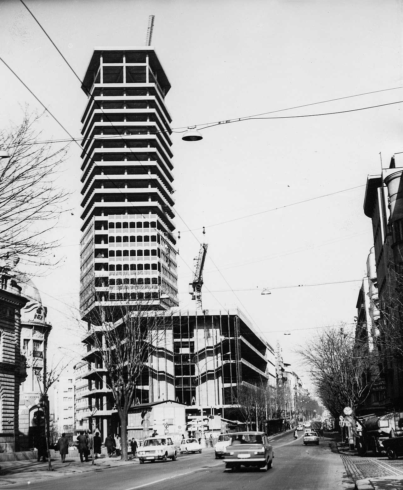
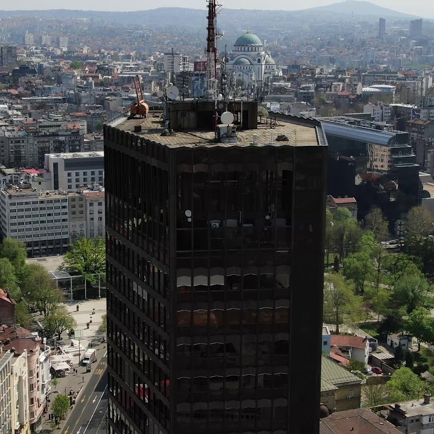

ПАЛАТА Београд
(БЕОГРАЂАНКА)

Палату Београд пројектовао је архитекта Бранко Пешић. Иначе, њега често бркају са савремеником градоначелником Бранком Пешићем, чији се мандат завршио након што је Београђанка, са својим 101 метром висине, 23 спрата и 40.000 квадрата, отворена за јавност 22. априла 1974. године.

Урбана легенда каже, иако за то никада нису пружени докази, да је неко у тадашњој власти био веома узрујан тиме што највиши објекат у граду носи име Палата "Албанија".
- "Како Албанија у сред Београда? Хајте људи, не може то тако. С једне стране Албанија, с друге Москва. А, где је ту Србија, где је ту Београд", наводно је рекао дотични.
И би одлучено. Највећа зграда тек ће бити подигнута, зваће се Палата Београд и засениће све друге.
Речено – учињено.
За локацију је изабрана раскрсница у центру како би зграда била видљива одасвуд и постала нови оријентир који ће својом доминацијом "заменити" Палату "Албанија" и хотел "Москва".
Иначе, на тој парцели, на ћошку улица Краља Милана и Масарикове, налазила се кућа Јеремије Миливојевића, коју је требало да замени објекат браће Теокаровић, познатих предратних трговаца. Ипак, Други светски рат распршио је идеју ове браће па је плац дочекао шездесете и "златно доба Београда" у коме је Београђанка саграђена.
Изградња импресивног објекта почела је 1969. и трајала је само пет година. Одлучено је да фасада Београђанке буде украшена најквалитетнијим црним алуминијумом који је дотеран из Италије. Тако је зграда добила ван временски елегантан изглед који је, у исто време, уливао и дивљење и поштовање.
Али, није се ту стало.

Посебна пажња посвећена је унутрашњости Београђанке. Видиковац на 22. спрату пружао је поглед на престоницу од кога дах затаје чак и када се стоти пут нађете пред њим. Иначе, видиковац је затворен деведесетих, али има назнака да ће бити поново отворен. Зграда је опремљена посебним рачунарским системом који будно пази на климатске услове у објекту и подиже и спушта ролетне у зависности од временских прилика, а ту су и лифтови који великом брзином, али не тако да човеку буде непријатно, превозе људе од дна до врха. Свакако Београђанка беше зграда која није имала премца. А, неки би можда рекли да конкуренције нема ни данас.
